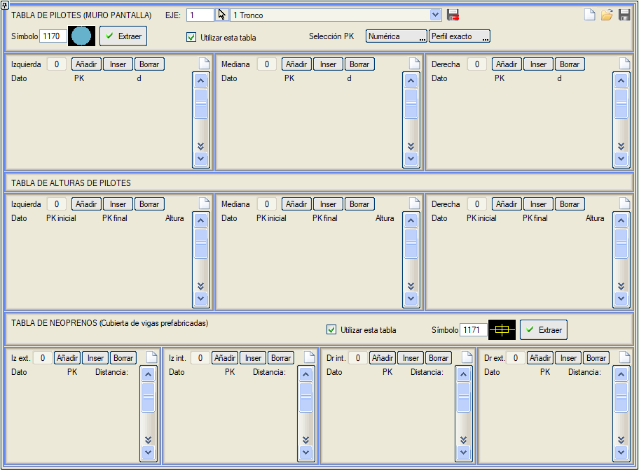

| |
|
KAZIK TABLOSU (İKSA DUVARI)
|
|  Bu menü aracılığıyla kazıkların dağılımını bir plan düzlemine uyarlamak mümkündür. Ayrıca, bu verileri haritadaki bir sembolden çıkarmak için bir araçla, prefabrik kirişlerin çatısının neopren takozlarının merkezleri için bir tablo eklemeye de olanak tanır. [Çıkar] düğmesini kullanarak, haritada bu menüde belirtilen sembol tipi aranır ve sağ taraf, sol taraf ve refüj için kazıkların KM'lerini içeren bir tablo oluşturulur. Her bir KM verisinin yanına, kazığı teorik konumundan sağa doğru kaydırmak için bir d mesafesi tanımlanabilir. Kazıklar, KM'lerini manuel olarak veya interaktif olarak belirterek eklenebilir. KM'ler interaktif olarak atanırsa, seçilen KM çıkarılan enkesitle veya enterpole edilmiş bir enkesitle çakışabilir. [Bu tabloyu kullan] etkinleştirilirse ve eksenin bir bölümünde kazıklı bir iksa duvarı tanımlanmışsa, Istram bu menüden tanımlanan kazıkları kullanacaktır. Menünün ikinci bölümü olan KAZIK YÜKSEKLİKLERİ TABLOSU, kazıkların toplam yüksekliklerini kesitler halinde tanımlamaya olanak tanır. Bu alan, menünün her iki bölümünde de veri olması durumunda önceliklidir. Bir KM için veri yoksa, duvarın yüksekliği kullanılmaya devam edilir. |